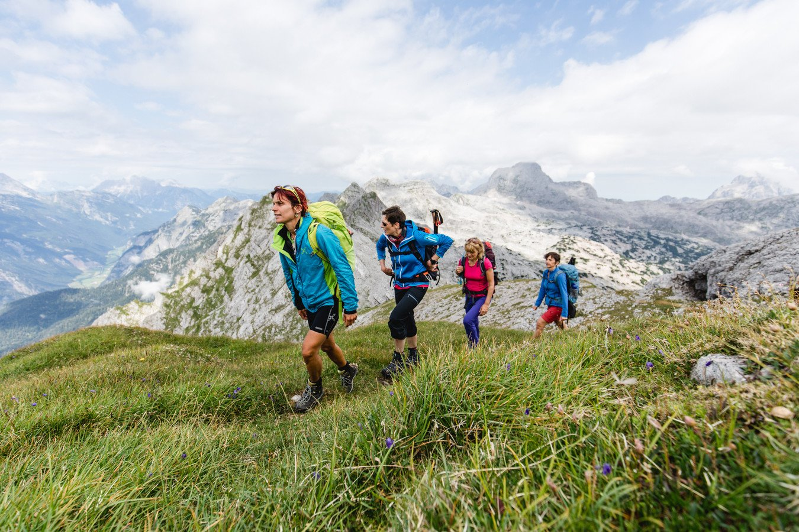

Wandern ist eine Form des Gehens von meheren Stunden. Früher war es eine Form des Reisens, heute ist es eine Freizeitbeschäftigung, die für jeden geeignet ist.
Es gibt:
Wandern ermöglicht es mir in der Natur zu sein, zu entspannen und die frische Luft zu genießen. Hier in der Region im Schwarzwald oder im Pfälzer Wald gibt es viele Wanderwege.
